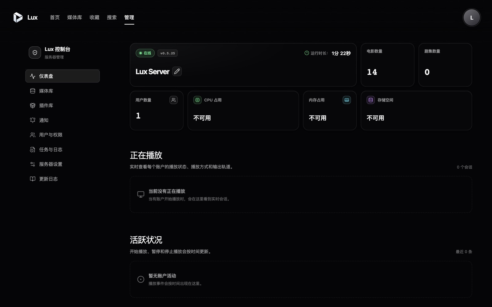
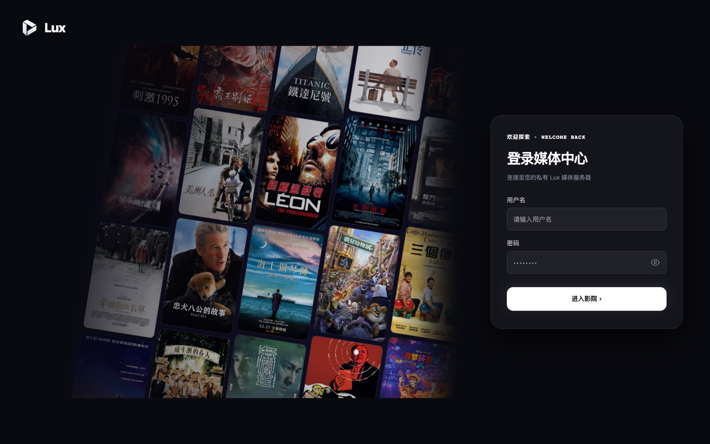

大库也不卡的
个人媒体服务端
Lux 用 Rust 编写，专为 NAS 设计。内存占用低、加载快、可诊断，并兼容 Emby 第三方客户端——换掉服务端，不用换播放器。
Docker 一行部署 · 默认 SQLite · 可选 PostgreSQL
为什么做 Lux
Emby 的第三方客户端生态很好，但媒体库一大，服务端就成了负担。Lux 只解决这一件事。
低占用
单个 Rust 进程 + SQLite，后台任务并发有界，不会因为一次扫库吃光 NAS 的内存。
加载快
用户请求不做全库扫描、不调 TMDb、不跑 ffprobe；这些都在后台任务里完成。
不换播放器
兼容大部分 Emby 接口，VidHub、SenPlayer、Infuse 等客户端直接连接。
纯粹本地
不做订阅、不做下载，只做本地媒体管理——本地 NFO 与图片优先。
特性
多库多根路径
电影、电视剧、混合库；一个媒体库可配置多个根路径。
增量扫描
基于文件事件；任务可暂停、恢复、取消与重试。
元数据管理
NFO 与图片优先，候选匹配、字段锁定、图片管理、原子写回。
直放与外挂字幕
本地直放、Range 请求、外挂字幕、多版本/多媒体源选择。
.strm 支持
支持外部播放地址，播放路径不会主动探测或代理远程媒体。
Lux Web 与管理台
首页、浏览、搜索、继续观看、收藏，以及完整的管理控制台。
用户与权限
用户、会话、媒体库 ACL、下载权限、审计事件与结构化日志。
SQLite / PostgreSQL
默认 /config/lux.db，也可接入外部 PostgreSQL。
插件运行时
独立进程插件：TMDb、媒体探测、IP 归属地等能力。
Lux 暂不支持 Web 播放（浏览器解码能力有限），请配合第三方 Emby 客户端播放。
实机截图


截图来自 Lux v0.5.25 实际运行界面，使用演示数据。
快速开始
需要 Docker Engine 与 Docker Compose v2。
services:
lux:
image: pdzhou/lux:latest
container_name: lux
ports:
- "8097:8097"
volumes:
- ./config:/config:rw # 数据库、插件、配置、日志（必须持久化）
- ./media:/media:rw # 媒体库（NFO/图片写回需要读写）
restart: unless-stoppeddocker compose up -d打开 http://localhost:8097/，按引导选择数据库并创建第一个管理员。首次初始化建议只在局域网完成，之后再通过 HTTPS 反向代理或 Tailscale 对外访问。
图文配置教程（建库、刮削、连接客户端、反代） · 完整文档 · 部署指南 · 兼容性 · Docker Hub
授权说明
Lux 为源码可见、非商业授权，不是 OSI 认可的开源项目。允许用于源码审查、安全审计、教育、测试和其他非商业用途；商业使用需版权所有者另行书面许可。完整条款见 LICENSE。